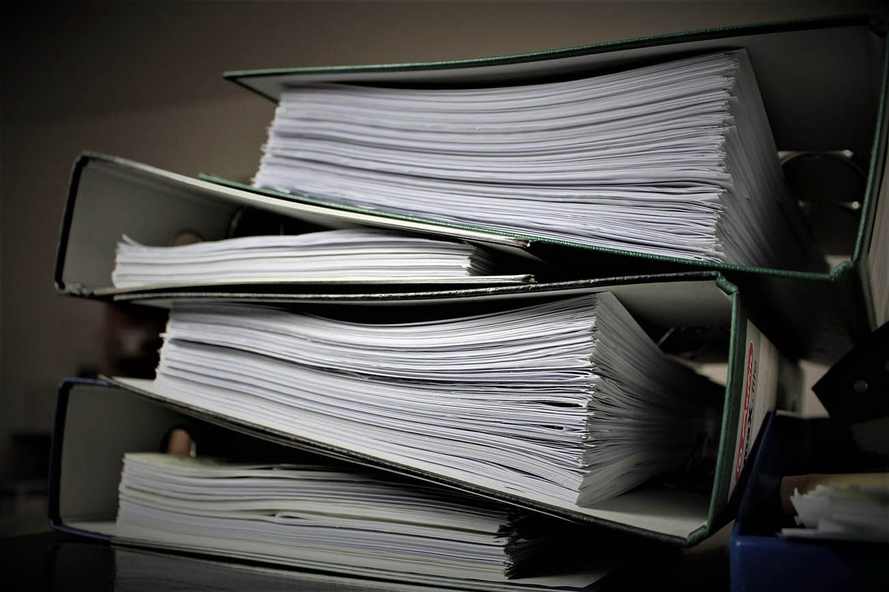
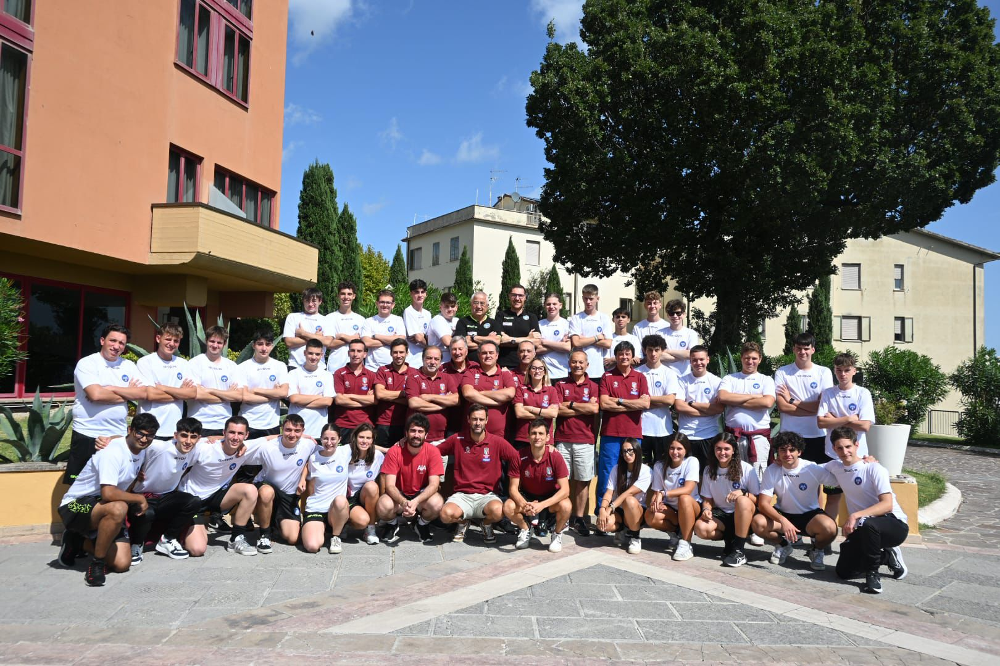

LUNEDI’: rapporto di gara e confronto con i colleghi
"Il rapporto di gara è parte integrante della partita, anche se può sembrare un compito noioso perchè burocratico.
È il resoconto dettagliato di ciò che è successo sul campo, un documento che racconta la storia della gara attraverso i tuoi occhi.
Il rapporto di gara e il successivo confronto con i colleghi sono degli strumenti preziosi per mettersi in discussione, per condividere le proprie esperienze, per imparare dagli altri.
Questi momenti in cui si è costretti a riflettere sulle proprie azioni ti aiutano a diventare un arbitro più consapevole e più efficace."
È il resoconto dettagliato di ciò che è successo sul campo, un documento che racconta la storia della gara attraverso i tuoi occhi.
Il rapporto di gara e il successivo confronto con i colleghi sono degli strumenti preziosi per mettersi in discussione, per condividere le proprie esperienze, per imparare dagli altri.
Questi momenti in cui si è costretti a riflettere sulle proprie azioni ti aiutano a diventare un arbitro più consapevole e più efficace."


⬅ Torna alla Home | Giorno successivo ➡